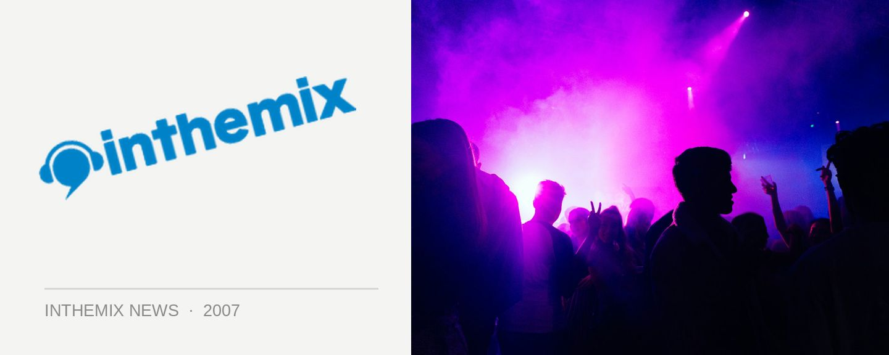

Bryan Jones joins Monkey Tennis for 5th birthday bash
Monkey Tennis is one of Sydney’s lone voices of deep jackin’ house, and on Saturday 12th May the Chicago house guru will be flying in to help them celebrate reaching their five year landmark in style. Bryan Jones is one of the windy city’s busiest and most prolific producers, releasing over 100 of his tunes over the past five years that have been caned by some of the world’s biggest DJ names.
He’s the brains behind the Control and Ringside Records labels and his most recent hit was Chicago Jack. He’s got the chops as a DJ too, last year touring the likes of Russia, Bulgaria, Belgium, Canada, and the Netherlands. Stopping off in Australia, he’ll be launching his debut album Step Back.
He’s the latest in a long line of excellent international deep house talent hosted by Monkey Tennis, and on Saturday the 12th he’ll be joined by local support from Yogi, Illya, Jools, John Devecchis, Simon Ramsey, Tom Da Silva, Synik and the Monkey Tennis boys Lummy and Broadband.
Five years is a long time in Sydney clubbing years, so don’t miss it!
Monkey Tennis 5th Birthday feat. Bryan Jones hits Candy’s Apartment next Saturday May 12th.